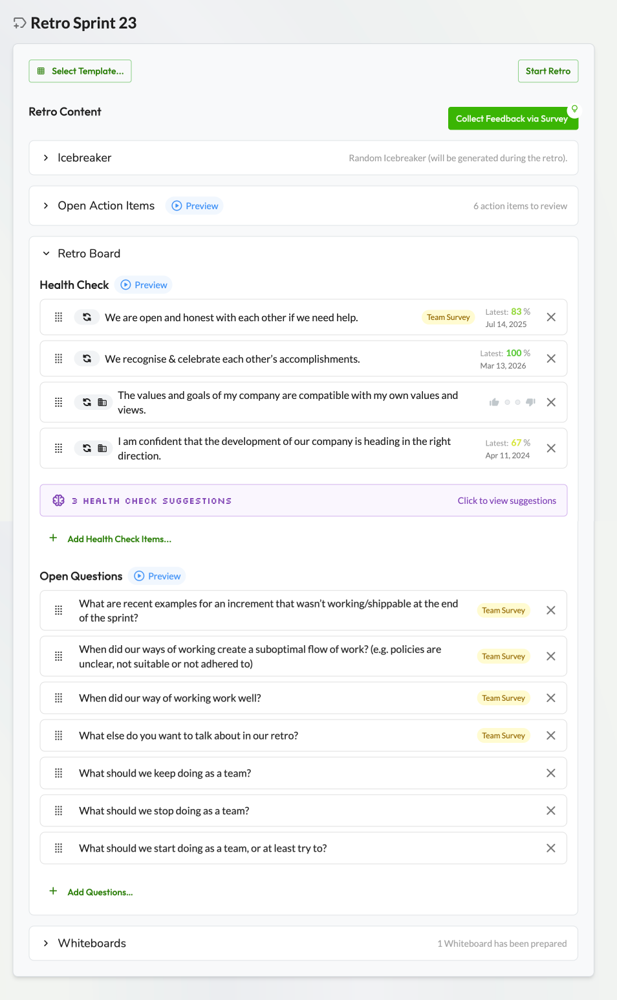
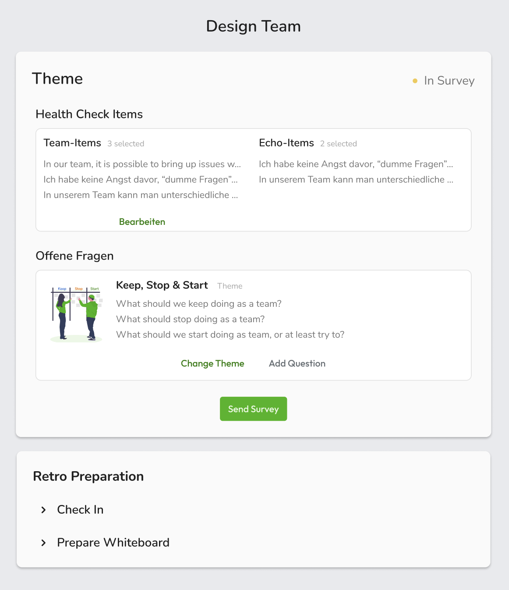
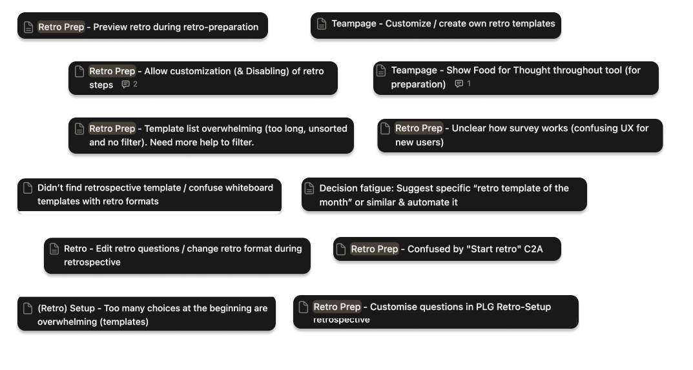
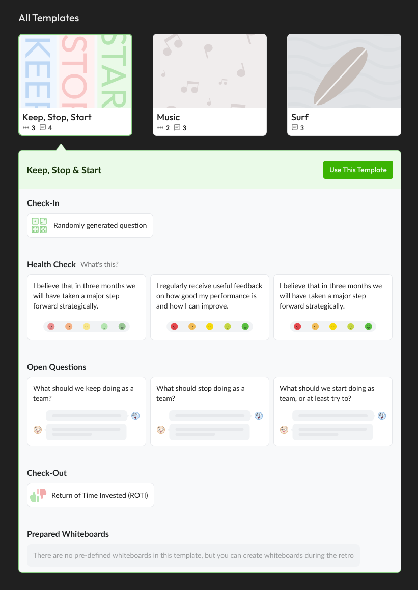
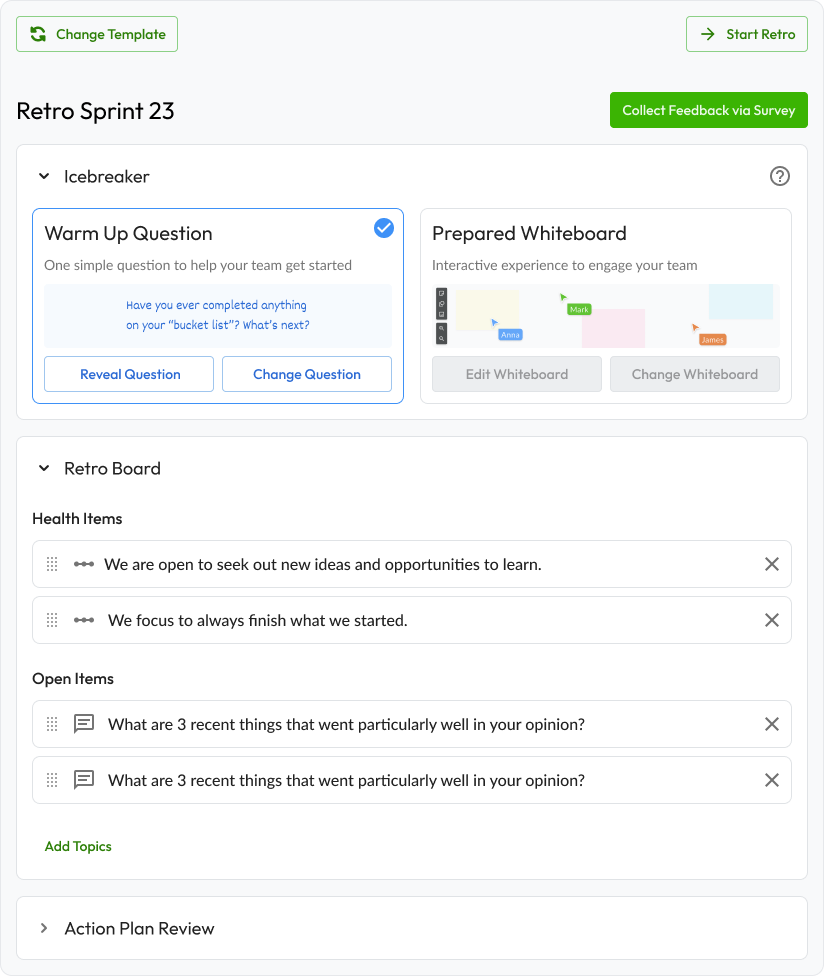
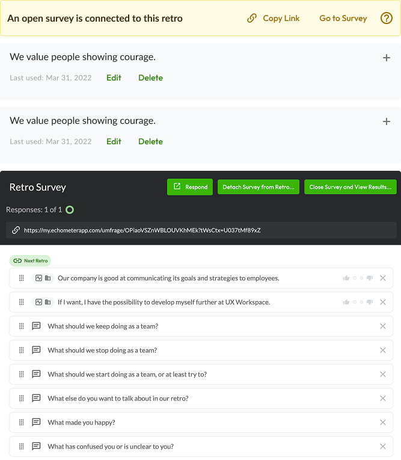
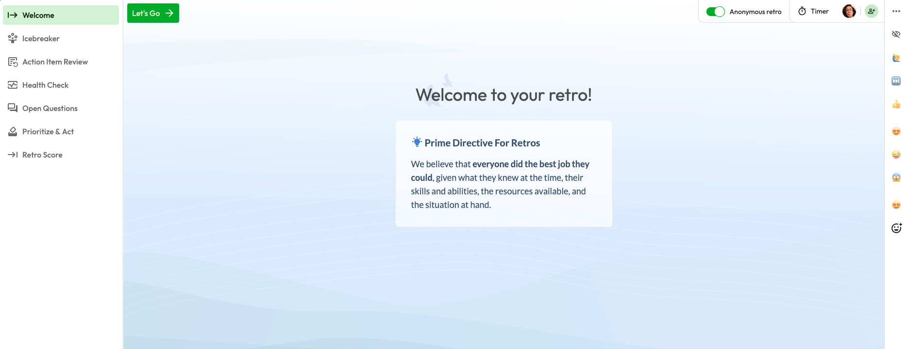
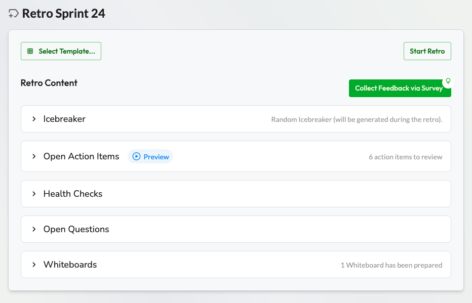
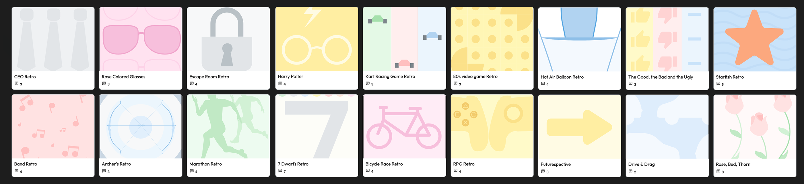
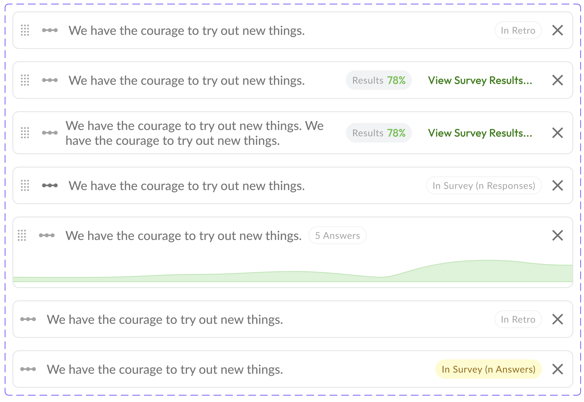

Specialist in complex B2B SaaS and developer-adjacent products. Design that moves metrics.
Users weren't converting to their first retrospective. Support tickets and user interviews pointed to the same problem: the preparation flow was cognitively overwhelming and structurally unclear.
I identified cognitive overload as the primary hypothesis. What made this project interesting was what we chose not to fix — and why that was the right call.

I diagnosed the root cause as cognitive overload — the flow asked users to make abstract decisions with no mental model of what they were preparing for.


The core problem wasn't just the prep flow in isolation — it was that Echometer's retro structure appeared in three different contexts across the product, with no visual or structural consistency between them. Making them consistent was the real fix.
Users encountered the retro structure for the first time during signup — but it looked and felt completely different from the tool itself.
The prep flow presented steps in a different order and with different framing than the actual retro — creating a mental model mismatch before users even started.
The in-session experience had its own visual logic. Users who completed prep arrived to a different-looking product than what they'd just prepared for.



The core insight was that users had no mental model of what a retrospective would look like — so the prep felt abstract and unmotivating. The fix was to make the prep visually mirror what they'd see during the actual retro.
I merged steps, simplified the survey presentation, and reframed each step around the outcome it produced — not the action it required.
Rather than a traditional design handoff, I worked directly alongside the engineer during implementation — reviewing and iterating on UX and visual decisions in real time. This reduced back-and-forth and kept the final product close to the intended experience.



The item selection model was also contributing to confusion — but changing it would have added significant scope and delayed the fix to the core flow. I identified this boundary early and proactively recommended deferring it to the founders.
The founders aligned quickly — the priority was staying lean and shipping fast. We shipped the validated solution without the full fix.
The deferred problem was documented, quantified, and advocated for in the next roadmap cycle. It eventually got built — which validated the original judgment call.
The item selection model was also contributing to confusion — but changing it would have added significant scope and delayed the fix to the core flow. I identified this boundary early and proactively recommended deferring it to the founders.

Keyboard navigation was a primary concern. The redesigned sidebar introduced multiple accordions and nested sublevels — a structure that creates non-trivial tab order complexity. Each state (collapsed, expanded, active) was reviewed for focus management, escape key behavior, and ARIA labeling. A user navigating by keyboard needed to experience the same hierarchy as one using a mouse.
M1 activation (first retro completed) was the target metric. We shipped with a clear hypothesis and validated it through qualitative signal — the survey adoption number confirmed the direction.
The retro survey — a core feature of the user happy path — went from negligible usage (~3%) to 10–15% of all retros prepared weekly. The most direct signal that users were now engaging with the full retro structure.
First retro completion rate moved from 29.3% (control) to 37.8% (show) — a +29% relative improvement. Measured via PostHog funnel across 571 workspaces.
The item selection model I flagged and deferred was eventually built in a later roadmap cycle — validating the original scope recommendation.